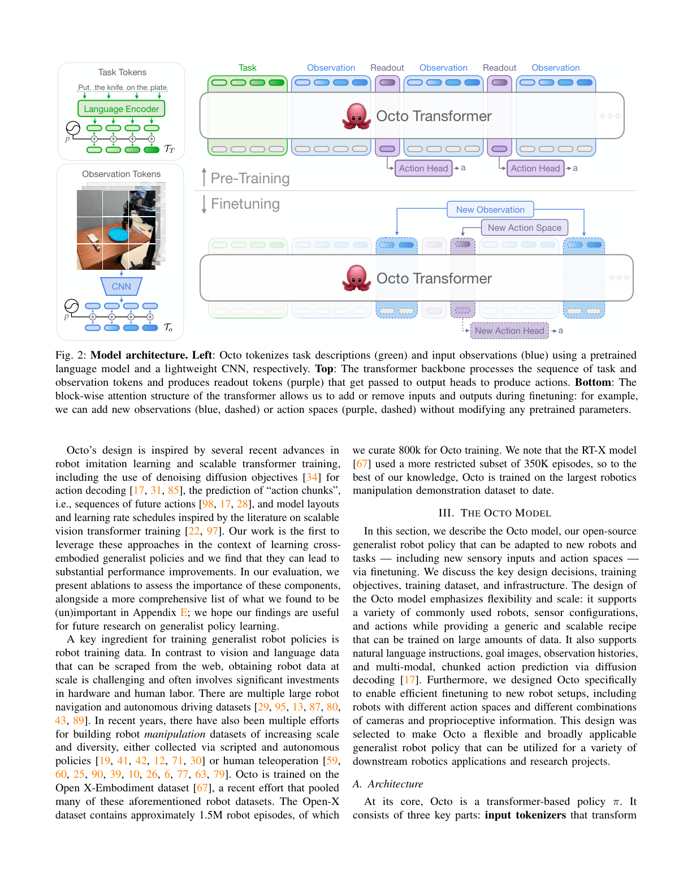
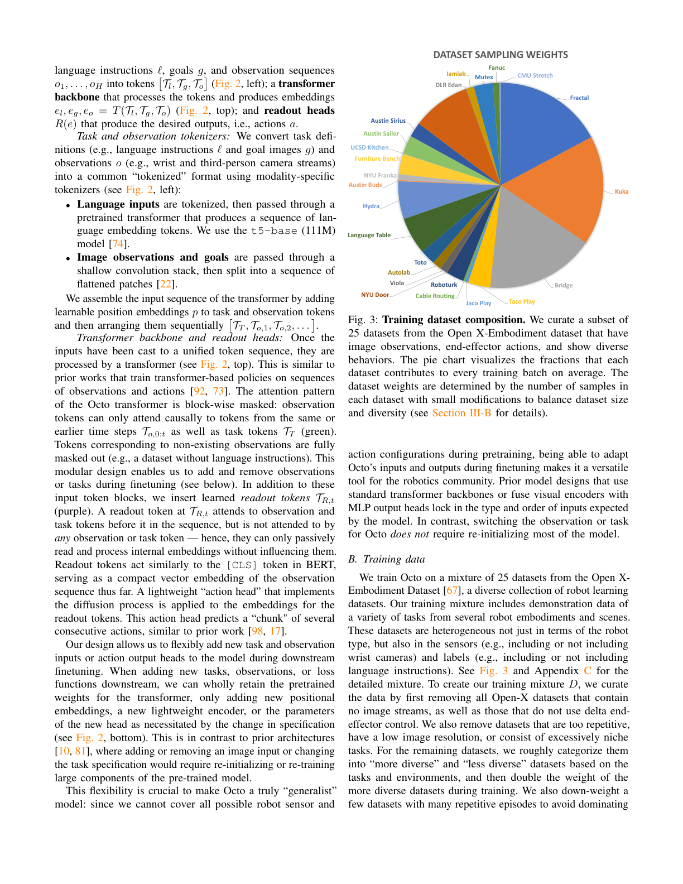
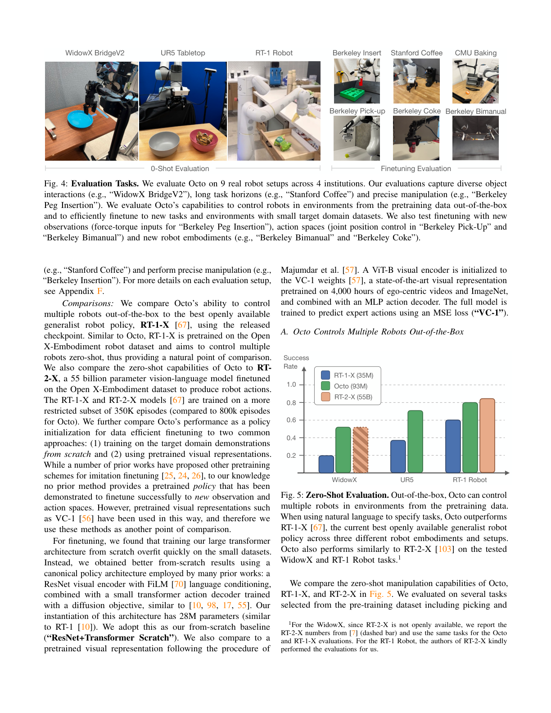
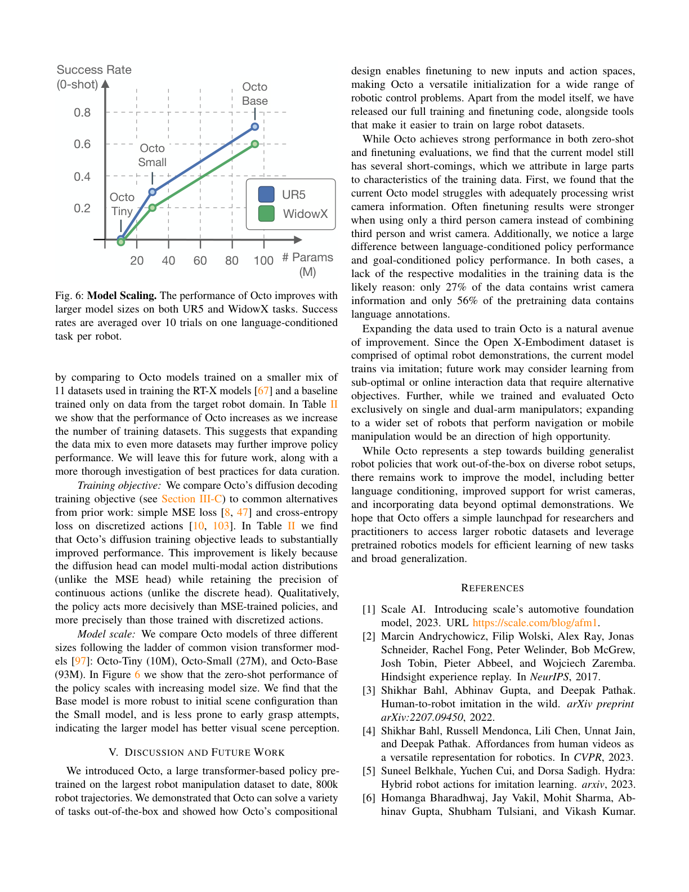

💡速记层 · 思想 / 逻辑 / 方法
默认读完就走——只讲思想、逻辑、方法；效果作验证。要核对原文再看下面的「深读层」。
- 机器人操作数据获取昂贵，单机器人训练的策略泛化性差；需要一个能跨本体预训练、下游高效微调的通用策略。
- 现有 GRP（RT-1-X、RoboCat 等）锁死了输入/输出格式，换观测或动作空间就得重训大量参数，实用性受限。
- Octo 的解法：用 block-wise 因果 attention 让 transformer 同时处理多模态输入，readout token 作为模块化输出接口——新增/移除 token 块不影响骨干权重。
- 动作 head 用 diffusion decoding 而非 MSE/离散分类——能拟合多模态动作分布，兼顾连续动作的精度。
- 在最大机器人操作数据集（OXE 800k 轨迹）上预训练后，仅需 ~100 示范 + <5h 单卡微调就能适配新任务/新观测/新动作空间。
零样本下 Octo 平均高于 RT-1-X 29%，接近 RT-2-X（55B 参数）；6 个微调域平均 72% 成功率，次佳基线仅 20%；模型大小（27M→93M）单调提升性能；消融证明 diffusion head > MSE > 离散，宽数据混合 > 单一数据集，ViT 架构在大数据下比 ResNet 更优。
想看具体数字（点开）
- 零样本：WidowX 上 Octo 93M 远超 RT-1-X 35M；WidowX + RT-1 Robot 任务与 RT-2-X 55B 持平。
- 微调：Berkeley Peg Insertion 70%（新力矩观测）；Berkeley Pick-Up 60%（新关节控制）；Berkeley Coke 100%（新机器人本体）；Berkeley Bimanual 80%（双臂 14DoF）。从头训练平均 20%，VC-1 平均 15%。
- 消融（WidowX 40 trials）：diffusion 83% vs MSE 35% vs 离散 18%；OXE 25 数据集 83% vs RT-X mix 60% vs 单 Bridge 43%。
- 零样本泛化分析（WidowX）：已见分布 85%；新物体 80%；新环境 40%；新技能 5%——在新技能上仍明显落后。
Track A（移动操作 VLA）重要参考：Octo 是"跨本体预训练 + 灵活微调"这一范式的基石实现，其 readout token 设计、diffusion action head、OXE 数据混合策略被后续 GR00T N1、π0 等广泛引用。理解 Octo 是理解后续 VLA 的前提。Track B（足式控制）不直接相关——Octo 只做操作，不涉及 locomotion。建议深读架构设计与消融，跳过实验细节。
◆核心观点 · 证据
每条 = 中文论点 + 📍页/节 + 🔤逐字原文(Ctrl-F 锚点) + 🀄译文 + 💡解读。
they typically require users to stick to the sensory inputs and action space used during pretraining and do not support adaptation to new observation and action spaces. Furthermore, the largest models are not publicly accessible.
Octo is the first GRP that can be effectively finetuned to new observations and action spaces and the first generalist robot manipulation policy that is fully open-source, including the training pipeline, model checkpoints, and data.

A readout token at TR,t attends to observation and task tokens before it in the sequence, but is not attended to by any observation or task token — hence, they can only passively read and process internal embeddings without influencing them.
The attention pattern of the Octo transformer is block-wise masked: observation tokens can only attend causally to tokens from the same or earlier time steps To,0:t as well as task tokens TT (green). Tokens corresponding to non-existing observations are fully masked out
We found this policy parameterization to outperform policies trained with MSE action heads or discretized action distributions in both zero-shot and finetuning evaluations.
This improvement is likely because the diffusion head can model multi-modal action distributions (unlike the MSE head) while retaining the precision of continuous actions (unlike the discrete head). Qualitatively, the policy acts more decisively than MSE-trained policies, and more precisely than those trained with discretized actions.

In Table II we show that the performance of Octo increases as we increase the number of training datasets. This suggests that expanding the data mix to even more datasets may further improve policy performance.

we found that on average Octo had a 29% higher success rate than RT-1-X (35M parameters). For the WidowX and RT-1 Robot evaluations, we also compared to RT-2-X (55 billion parameters) and found that Octo performed similarly.
On average across the six evaluation setups (detailed in Appendix F), Octo outperforms the next best baseline by 52%.

We find that the Base model is more robust to initial scene configuration than the Small model, and is less prone to early grasp attempts, indicating the larger model has better visual scene perception.
we opt for a "transformer-first" architecture that uses very shallow CNN patch encoders and concentrates most of the parameters and FLOPS in the transformer backbone... we found ResNet-based architectures to perform better than ViTs when training on small datasets, e.g., in our "from scratch" comparisons, underlining that large transformer policies are uniquely suited for scalable training on diverse datasets.
⎘开源状态
Octo 是第一个完全开源的大规模通用机器人策略。
- 代码
- 已开源 github.com/octo-models/octo（JAX 实现；含预训练、微调、数据加载完整管道）
- 权重
- 已开源 Octo-Small (27M) + Octo-Base (93M)，托管于 HuggingFace
rail-berkeley/octo-base - 数据
- 已开源 训练数据来自公开的 Open X-Embodiment 数据集；独立数据加载器兼容 JAX/PyTorch
- 推理示例
- 已开源 3 行代码加载并运行（见 Appendix B）
We open-source all resources required to train, finetune and run our model (see https://octo-models.github.io): Pretrained Octo checkpoints for Octo-Small (27M params) and Octo-Base (93M params). Finetuning scripts for Octo models, in JAX. Model pretraining pipeline for Octo pretraining on the Open X-Embodiment dataset, in JAX. Standalone data loaders for Open X-Embodiment data, compatible with JAX and PyTorch.
⚖批判 · 评级
Octo 是"开源通用机器人策略"这一研究范式的奠基性工作：readout token + block-wise attention 的模块化设计被后续大量工作（GR00T N1、π0 等）直接引用或借鉴；diffusion action head 成为操作策略的标准选择；OXE 800k 数据混合是迄今规模最大的公开机器人预训练数据集使用记录。消融研究扎实：同一套 hyperparameter 跑遍 6 个微调域，设计决策的分析（data宽度 / architecture / objective）具有高参考价值。
① 任务局限：仅做单/双臂操作，未涉及移动操作、导航或人形；"generalist"的范围有限。② 泛化上限明显：零样本新技能（翻杯、精确插入）成功率仅 5–40%，说明跨任务泛化仍是瓶颈。③ 数据不均衡的影响：仅 27% 含手腕相机，56% 含语言标注，导致这两个模态的性能明显较弱——论文坦诚但无解法。④ JAX 生态门槛：代码全用 JAX 写，PyTorch 用户需要适配，社区贡献门槛较高（后续 lerobot 等做了 PyTorch 移植）。⑤ Diffusion head 推理速度：20 步 DDPM 去噪在实时控制上有延迟压力，论文未详细讨论（后续 DDIM / consistency model 可缓解）。
评级：Important 在通用机器人策略领域具有标志性意义，尤其开源贡献极大推动了社区研究，但能力边界和泛化局限也清晰可见。对于理解后续 VLA 工作（GR00T N1、π0、OpenVLA）是必读的前置基础。